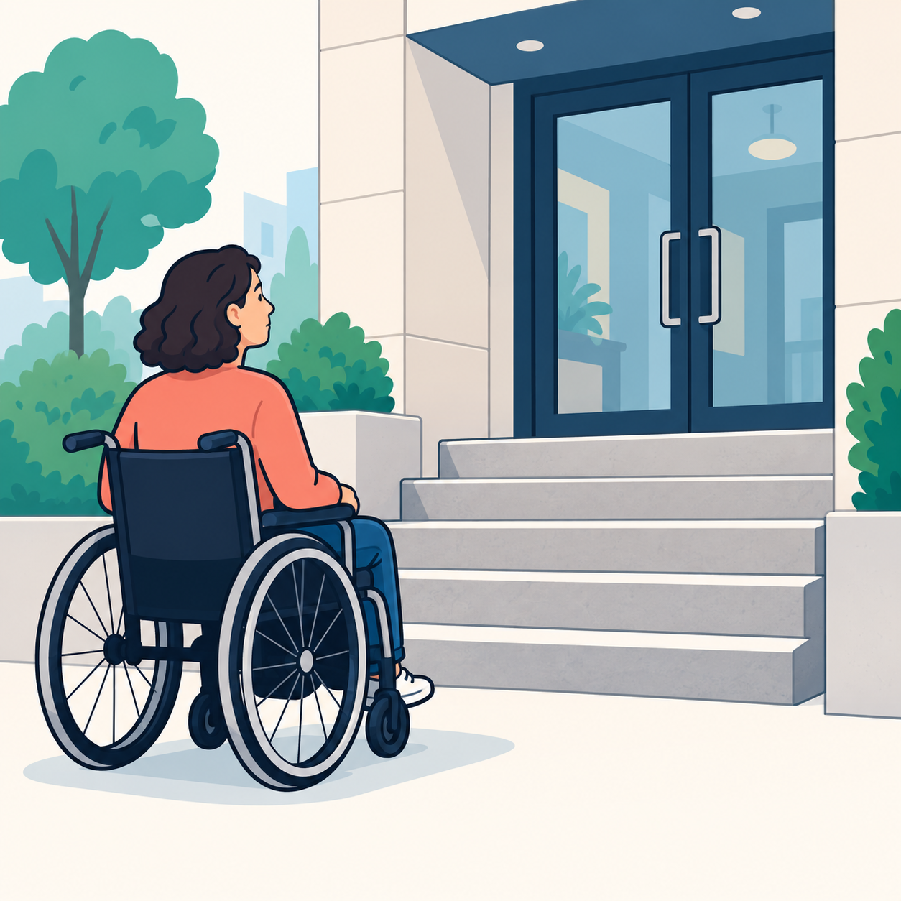

Hva kan være en konsekvens dersom vi lar være å forholde oss til universell utforming (enten på nett eller i virkeligheten)?
En konsekvens kan være at noen blir utestengt fra å bruke tjenester eller delta i et samfunn.
For eksempel kan tekst med dårlig kontrast være vanskelig å lese for noen med nedsatt syn.
I virkeligheten kan en inngang med bare trapper hindre personer i rullestol i å komme inn. Dette kan føre til at de blir avhengige av hjelp fra andre og ikke får samme mulighet som resten av samfunnet
